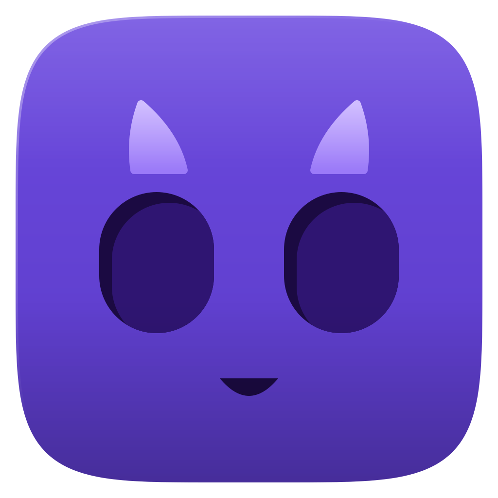
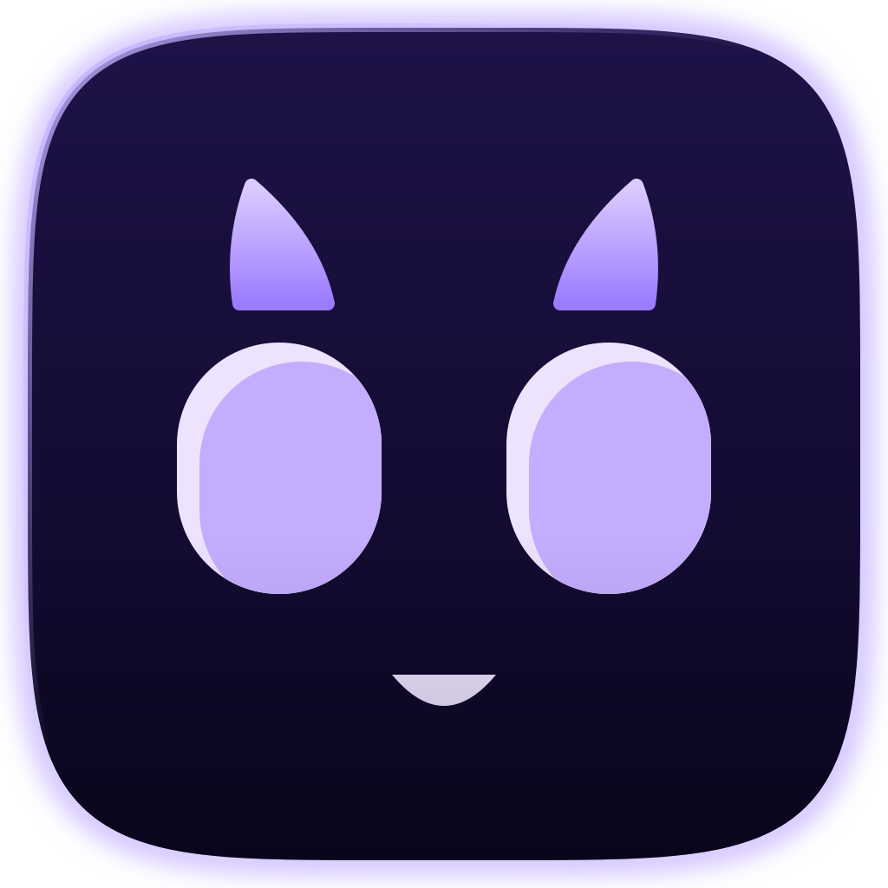
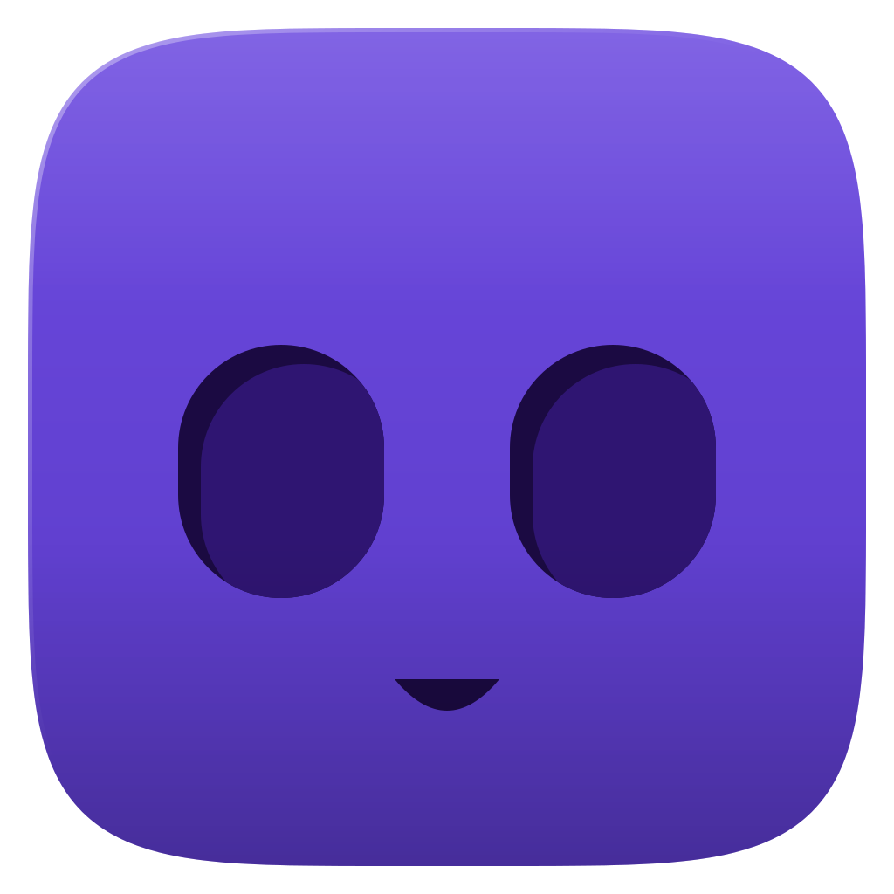

Base mínima

Base: 5 formas (2 olhos, 2 chifres, 1 sorriso)
Base, escuro
Sem chifres: 3 formas, lê como robôLegibilidade em 144, 96, 72 e 48 px (com a versão sem chifres e o ícone antigo)
Base
Base escura
Sem chifres
Adaptive icon (tracejado = área segura de 66dp)